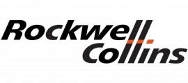
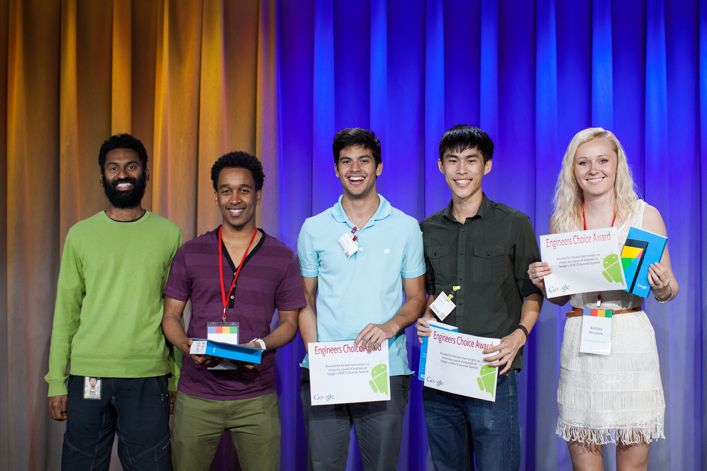

Kelsey Hrubes
{ kelseyhrubes@gmail.com }
I am a Computer Science major at Iowa State University, who loves front end development, UI/UX design, and coffee.
I get around
no, not like that
ø
Iowa Native
I was born and raised in Cedar Rapids, Iowa. Have you ever heard of the term "Iowa-nice"? It's the idea that Iowans are the friendliest people you'll meet. It'd like to think that's true, and try to fulfill the stereotype!
f
Nach Deutschland
Fall 2014, I left the Midwest study abroad in Mannheim, Germany. I took math and CS classes at Hochschule Mannheim, all taught in German! After the semester concluded, I went on to intern at Rockwell Collins Deutschland as a Software Engineering Intern.
Â
Silicon Valley
Summer 2015, I changed it up again. This time, interning at Google in Mountain View, California, on web client for Inbox by Gmail. There I discovered that my passion is front end development.
InternHacks
internhacks.io
I founded an organzied a hackathon/networking event for Bay Area tech interns, called InternHacks. The theme of the event was portfolio website development, websites just like this! InternHacks was a great success, with over 250+ attendees.
Learn More

Experience
-
Engineering Practicum Intern
Summer 2015 Mountain View, California
I worked on the web client for Inbox by Gmail, under the mentorship of two Google engineers.
Projects
-
Experiments Debugging Page
I developed a debugging page for internal use, to show the status of client-agnostic experiments within Inbox with a simple keyboard shortcut. This project involved both back end development, piping data from an internal api, and front end development, designing the page and filling it with the supplied data.
-
Promotions UI Framework I implemented a framework for showing Promotions, a non-modal dialog that displays a message to the user and allows them to take a few actions. This framework has been developed to be fully extendable, and the UI is flexible enough to be built with a variety of UI components.
Responsibilities
-
Corresponding with UX Designers To keep the Promotions UI consistent with the Google brand and Material Design, I worked closely with designers to assure that every possible combination of UI components looked good.
-
Writing Design Docs Because this framework will be used for a variety of future Promotions, it required careful planning to make sure it is fully extensible and consistent with the rest of the app. I wrote a detailed design doc covering design, implementation, concerns, and included a task estimate for how long implementation would take.
Languages & Tools
JavaScript
HTML5
CSS3
Java
-
Founder & Head Organizer
Summer 2015 San Francisco, California
Responsibilites
-
Developing internhacks.io I designed and developed the event website, using the MaterializeCSS framework. This was my first solo web development project.
-
Finding a venue to support 250+ attendees. I'm very grateful to General Assembly for allowing InternHacks to be held at their gorgeous office, and for sponsoring the event.
-
Allocating sponsorship. I was able to bring in Kik, Weebly, Microsoft, and Namecheap to sponsor the event.
-
Promoting the event. InternHacks had such high demand, that we ended up with a waitlist of over 300 people.
-
Software Engineering Intern
Spring 2015 Heidelberg, Germany
I worked on a small team comprised of German and French engineers to develop a web apps for internal use. I often attended meetings and corresponded with coworkers in German.
Projects
-
Employee Directory
I worked with another engineer to reimplement an old employee directory site from scratch. The site included a search page, employee profile pages,
and an interactive, dynamic tree diagram representing the company direct reports hierarchy.
-
HR Trainings Manager Two other engineers and I implemented a web app for HR to manage employee trainings. The app allowed an employee to select multiple trainings from a catalog and send a request via email to their manager, who could then send the training plan of their direct reports to the corresponding HR manager. The HR manager could then export all the trainings they recieved into an Excel spreadsheet. The UI for this app required support for English, French, and German.
Responsibilites
-
Front End My primary role was designing and implementing the front end using Bootstrap. I worked closely with the customer to assure this web app would be simple to use, but still contained the same functionality as the previous versions. An important requirement for these projects I fufilled was implementing the UI to be responsive to smaller screens.
-
Back End I worked with another engineer to implement an internal Rest API to query multiple MySQL databases.
-
Version Control & Agile Development I convinced our engineering department to begin using Git, Sourcetree, and Jira. To get the French half of our team up to speed on web development and how to use these products, I was flown to the Rockwell Collins office in Toulouse, France, for a week and mentored other full time engineers engineers on some of the languages and tools below.
Languages & Tools
JavaScript
PHP
jQuery
HTML5
CSS3
MySQL
Google App Engine
Git
Eclipse
SourceTree

-
GoogleJump Participant
March - August 2014Remote, New York City & Mountain View
I developed an Android app, FRIJ which reduces food wastage by OCRing images of receipts and notifies the user when items have spoiled. GoogleJump is a program sponsored by Google to help young students in Computer Science prepare for a potential internship at Google.
This was my first experience with Android development. I implented and designed the front end for the app, which is where I began to discover my interest in front end development and design.
Languages & Tools
Android
Java
XML
Android Studio
-
Software Engineering Intern
Summer 2014 Ames, Iowa
I worked on the Text & Tables team for WDesk. This was my very first software engineering internship, right after completing my first year as a computer science student.
Responsibilites
-
Version Control & Agile Development
I became proficient in using JIRA and other Atlassian products for Agile development. Git and Sourcetree were the main tools for version control. I found these tools so effective for delegating tasks that I was able to introduce them to the engineering department during my following internship at Rockwell Collins.
Languages & Tools
ActionScript3
MXML
HTML5
CSS3
Git
SourceTree
IntelliJ
GoogleJump 2014 Winner
Best Overall - Engineers Choice
frij-app.appspot.com
“For the best team project, as chosen by a panel of engineers at Google’s 2014 CS Summer Summit”
View on Github

Education
-
Iowa State University
Class of 2017
3.92/4.0 GPA
Computer Science major and German minor
Awards & Achievements
-
Outstanding Foreign Language Student - German Iowa State University Department Of World Languages
-
Dean’s List Fall 2013 & Spring 2014
-
Fred & Fay Robertson Endowment for Excellence Awarded for academic achievement
Extracurriculars
-
Board of Advisors - TenXList.com TenX is an invite-only network for female software engineers. I am a student advisor for product development, and attend meetings to discuss the features of the site and how to increase member engagement.
-
Com S 228 TA I am a teachers assistant for the Data Structures & Algorithms in Java course at Iowa State. Responsibilities include teaching a reccitation, holding office hours, and grading assignments.
-
Computer Science Learning Community Peer Mentor I am a Peer Mentor to freshman students in Computer Science. I help them adjust to life on a college campus and hold study groups to help teach programming.
-
Hochschule Mannheim
Fall 2014
College of Engineering study abroad program in Mannheim, Germany. All courses taught in German.
Extracurriculars
-
Cultural Student Mentor/Kulturtutor Mentored international students in German and English.